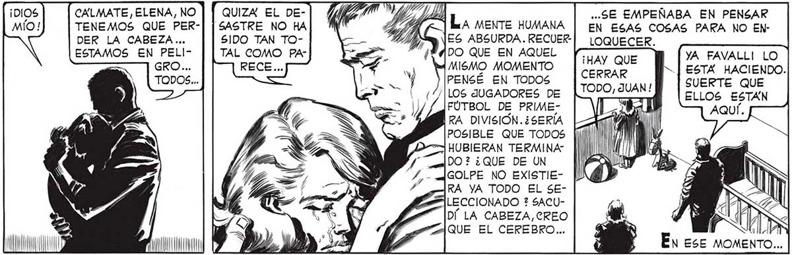
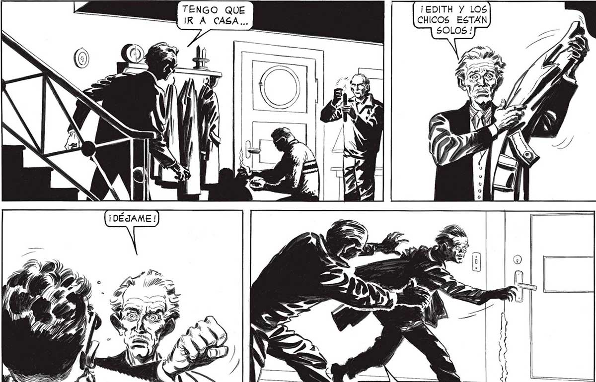
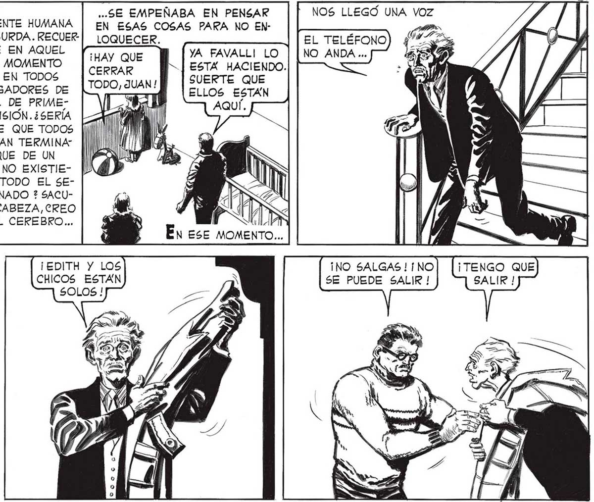

22 CALMATE, ELENA, NO | | QUIZA EL DE- 72) ..SE EMPEÑABA EN PENSAR NOS LLEGO UNA VOZ TENEMOS QUE PER-| | SASTRE NO HA MB LA mente HUMANA EN ESAS COSAS PARA NO EN- » DER LA CABEZA... SIDO TAN TO- IA ES ABSURDA. RECUER-| LOQUECER. ze A ESTAMOS EN PELI- TAL COMO PA- DO QUE EN AQUEL YA FAVALLI LO lata ¡HAY QUE = % MISMO MOMENTO e ESTA HACIENDO. PENSÉ EN TODOS IC UANI SUERTE QUE /|LOS JUGADORES DE 4 ELLOS ESTAN FUTBOL DE PRIME- | A AQUÍ. RA DIVISIÓN. ¿SERÍA |< POSIBLE QUE TODOS PA —] HUBIERAN TERMINA Ml DO? ¿QUE DE UN POQUN GOLPE NO EXISTIEARA YA TODO EL SEPA LECCIONADO ? SACUy DÍ LA CABEZA,CREO y ! 3 QUE EL CEREBRO... : 47 mm Y DY Y” En ese MOMENTO... TENGO QUE IRA CASA... ¡EDITH Y LOS ¡NO SALGAS! NO CHICOS ESTÁN SE PUEDE SALIR ! ¡TENGO QUE IR! ¡ NO ABRAS, POLSKY ! yl ¡IMPOSIBLE ! 1 B= heal z a y


